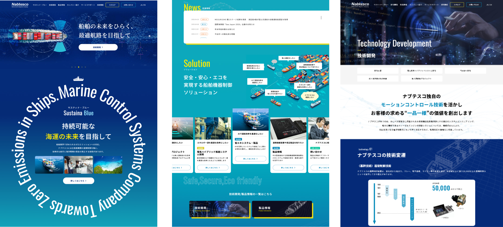

WORKS
制作実績
ナブテスコ舶用カンパニー / コーポレートサイトリニューアル
https://marine.nabtesco.com/
- プロジェクト概要
- ジャンルコーポレート
- 業種工業
- 制作期間6ヶ月
- 担当範囲デザイン、コーディング
- 使用技術
- デザインAdobe XD、Illustrator
- コーディングHTML、CSS、Javascript、WordPress
- 目的・要件
-
- ・企業コーポレートサイトのリニューアル
- ・海外からも多く閲覧されるため、英語版に切り替えれるよう作成
- デザインの工夫
-
トップページはサイトを訪れた人が海に関わる会社だと連想させる青系のグラデーションを背景に、サステナブルなイメージを表現。
ポイントに明るめの黄色を使うことでデザイン全体を引き締めています。
スライドや文字が回転するアニメーションなど、ユーザーがスライドする際に飽きのこない設計を意識しました。
- 実装面での工夫
- カタログダウンロードページでは、選択したカタログをzipファイルに圧縮し、ダウンロードできる仕様に、また、メールでもダウンロードリンクが送付されるよう作成しました。